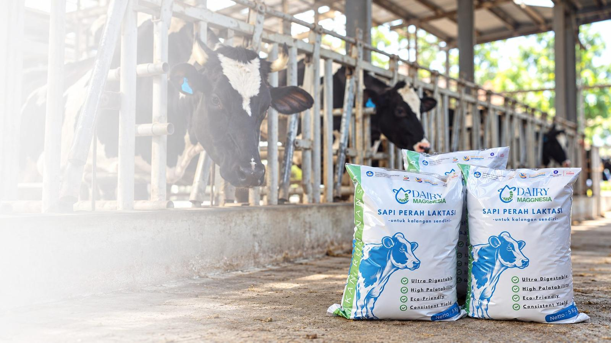
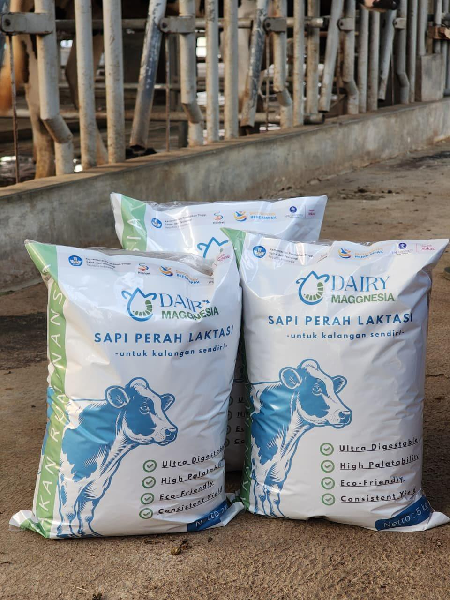
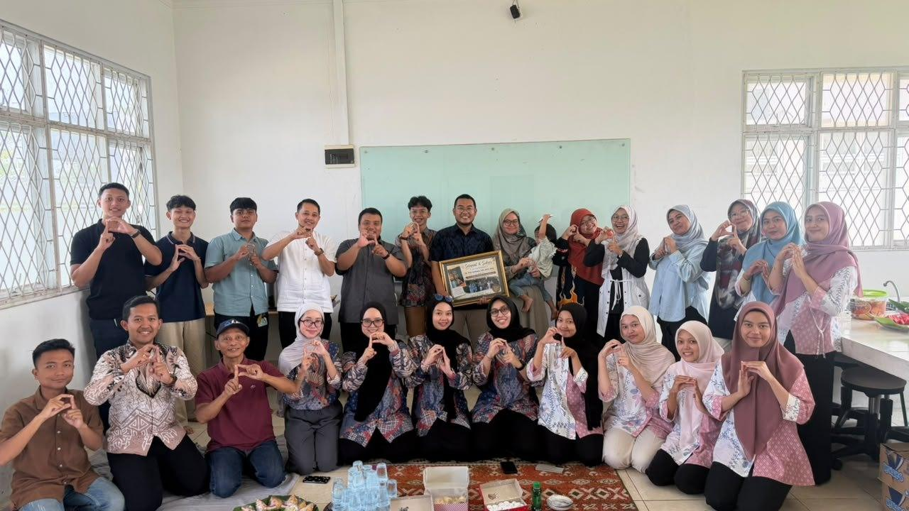
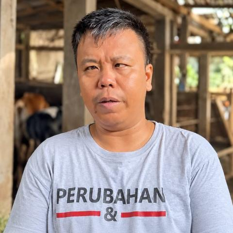
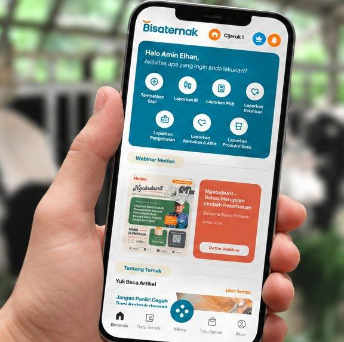

Memanfaatkan bahan organik
Maggot BSF dapat tumbuh dengan memanfaatkan berbagai bahan organik.

Dairy Maggnesia adalah pakan konsentrat sapi perah yang dikembangkan melalui riset pemanfaatan maggot Black Soldier Fly (BSF) sebagai salah satu sumber bahan pakan alternatif yang berkelanjutan.
Maggot BSF adalah larva Black Soldier Fly yang dapat memanfaatkan bahan organik dan dikembangkan sebagai bahan pakan ternak.
Maggot BSF dapat tumbuh dengan memanfaatkan berbagai bahan organik.
Maggot BSF dapat diolah menjadi berbagai bahan pakan, termasuk minyak larva yang digunakan dalam penelitian pengembangan Dairy Maggnesia.
Bahan organik dapat dimanfaatkan kembali menjadi sumber daya yang bernilai dan berkelanjutan untuk peternakan.

Produk Kami
Pakan Konsentrat Sapi Perah Berbahan Dasar Minyak Maggot BSF
Pakan konsentrat yang diformulasikan untuk melengkapi kebutuhan nutrisi sapi perah melalui pemberian bersama hijauan sebagai bagian dari ransum harian.

Perjalanan Kami
Pengembangan Maggnesia berawal dari pemanfaatan maggot BSF dalam pakan unggas. Pengalaman tersebut kemudian dikembangkan untuk ternak ruminansia hingga lahir Dairy Maggnesia untuk sapi perah.
Testimoni
Tidak menyangka waktu kemarin diuji kualitas susunya, ternyata jadi bagus. Terima kasih telah memberikan kesempatan kepada kami untuk menjadi mitra dalam penggunaan Dairy Maggnesia.

Eky SulistryoPeternak Mitra dari Jerami Farm, BogorTeknologi ini memiliki potensi yang diperlukan di peternak rakyat. Penting untuk mendiskusikan temuan ini dengan peternak dan memastikan kontinuitas produk.
Cerita dan Wawasan dari Dairy Maggnesia

Maggot BSF adalah larva Black Soldier Fly yang berpotensi digunakan sebagai bahan pakan ternak. Kenali karakteristik, kandungan nutrisi, dan alasan penggunaannya dalam Dairy Maggnesia.

Dairy Maggnesia hadir di ILDEX Indonesia 2026 untuk memperkenalkan inovasi pakan konsentrat sapi perah berbasis pemanfaatan maggot BSF. Kehadiran maggot justru menjadi salah satu hal yang paling memantik rasa penasaran pengunjung.

Pelajari 6 hal yang perlu diperhatikan sebelum mencoba pakan baru untuk sapi perah, mulai dari kebutuhan ternak, transisi pakan, respons sapi, hingga efisiensi biaya.
Ketika Riset Bertemu dengan Kebutuhan Industri
Riset dan pengembangan
Mitra industri

Dukungan Digital Peternakan
BisaTernak adalah aplikasi digital untuk membantu peternak mencatat dan memantau aktivitas peternakan, mulai dari data ternak, produksi susu, pakan, kesehatan hingga keuangan.
Dalam pengembangan Dairy Maggnesia, BisaTernak direncanakan menjadi salah satu kanal digital yang menghubungkan informasi produk dengan kebutuhan pengguna.
Punya pertanyaan tentang produk atau tertarik membahas kerja sama?
Hubungi tim Dairy Maggnesia untuk informasi lebih lanjut.